Much of this first assignment was dedicated to the implementation of a rasterizer object, that kept track of multiple variables that affected the rendering quality of a given image in the svg format. This was done by rasterizing over every sample of every pixel on the screen of the application, and using buffers to keep track of what color each pixel would be. A lot of task 1 was dedicated to this, rasterizing over a basic triangle shape to see whether pixels fit in the shape, and filling those pixels with some basic flat color. From there task 2 would expand on this, requiring that multiple subdivided samples be taken per pixel on screen. In this task, the colors would have to be averaged over the samples based on which subdivisions were in the triangle. Another file that was edited was the transforms.cpp file, which needed to implement transform matrices for the triangle drawing. This was task 3. Task 4 asked that barycentric coordinates be implemented; in the context of the task this was to rasterize an interpolated color triangle over not just spatial coordinates, but color coordinates as well. The only other files that were edited besides the rasterizer.cpp file, which kept the function implementations for different rasterizing methods, where the header files rasterizer.h and texture.h, as well as the texture.cpp file, for task 5, and task 6. While the header files were edited over minute details, like changes to functions' signatures, the texture.cpp file itself needed to implement different sampling methods for the texels of a given texture file, given that the parameters fed to the rasterizer had to be converted to uv coordinates in the texture space. This also used barycentric coordinate calculation done in a method in rasterizer.cpp, but then those uv coordinates were used to find a given color using the sample method from the texture.cpp file. The former task was just about implementing pixel sampling options, while the latter was about adding support for mipmaps, and level sampling methods. Other than that, some of the stuff that I learned about was things like casting object types, and using the & symbol in c++. I have very little experience with c++, so a lot of nuances that come with that language were very new to me in this assignment, and even had me lost at times. Although, I do hope I learned a good deal of how to handle the language moving forward. I also learned about the way the Vector2D struct was implemented, which was thankfully straightforward.
My first implementation of the rasterize_triangle method was very simple; it was two for loops over the x and y coords of the entire image size, with an if statement that checks whether each x and y combination fit inside of the triangle coordinates provided as parameters. I found out that there was already a function inside the triangulation.cpp folder that computes whether a point is mathematically inside a triangle, so I used that in the if statement after including the header triangulation.h (I also changed the file triangulation.h to support usage of the inside function). From there, I used the provided fill_pixel method in rasterizer.cpp to fill the color of that pixel if it passed the if statement. I added some more simple if statements that would check if an x value was outside of the triangle x values by a pixel distance of 1, and whether a y value was outside of the triangle y values by a pixel distance of 1. This simple trick optimized the runtime of the application well-enough, making it practically no worse than an algorithm that checks each sample within the bounding box of the triangle. At first my two for loops over x and y both started at 0.5, and iterated over 1 pixel each time, to sample points in the middle of each pixel, but that was eventually amended for task 2, where I needed to sample over more than one point per pixel. Here's a picture of it working as intended, with some aliasing highlighted in the zoom:
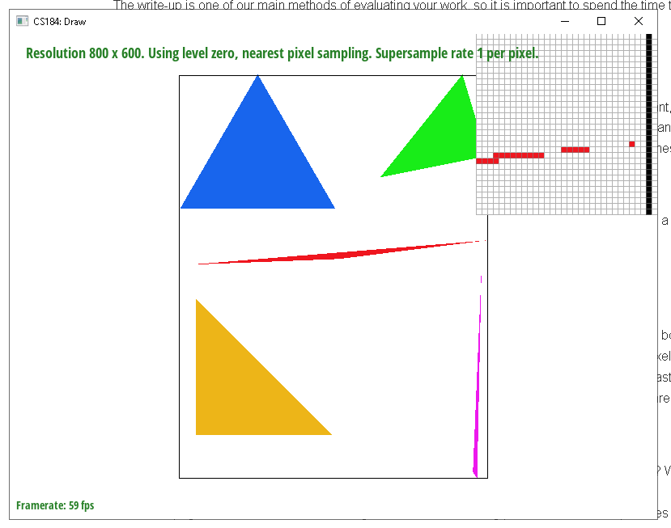
The last thing I did was add support for triangles oriented in the clockwise direction, as I was getting errors where some triangles remained unfilled. I did this by just adding two checks using the inside functions that swapped two points of the triangle parameters.
My subsequent implementations of rasterize_triangle expanded on the simplicity of my implementation from task 1. The first thing to note is that the sample buffer had to be changed. Originally, it was only created with enough space to hold every pixel's color information just once, so I added some code to the rasterize_triangle function and rasterize_point function to resize the sample buffer to hold every pixel times whatever the sample rate was. This would ensure that I could store the data on each pixel along with the data on each subdivided sample inside of each pixel, and what color that sample would be based on calculations. This would carry over to the other tasks as well. As mentioned earlier, this support was added to rasterize_point as well, except for that one it was to avoid erroneously supersampling lines and points. To support supersampling for the triangles, I added three variables: subpixel_index, sample_subdivision, and subdivision_increment. The purpose of the latter two variables was to divide each pixel into multiple samples that could be tested with the inside functions. This was accomplished with two more for loops inside the previous two for loops from task 1, where sample_subdivision marks where the first pixel sample is taken, and the subdivision_increment will iterate over more samples inside the same pixel, testing each time using inside().
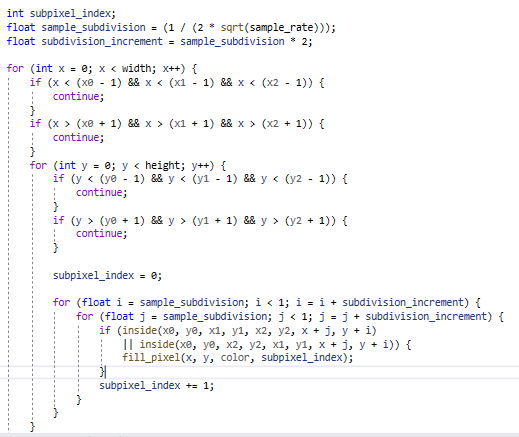
As shown in the code, these new for loops create values for subdivided fractions of a pixel that are then added to the original two for loop's x and y values, to properly test inside() on every pixel's samples, as many times as needed. The code above shows how those variables are calculated, which was part of the difficulty of this implementing this task. Lastly, that first variable, the subpixel_index, controls how those samples are stored in the sample buffer, so they can be averaged in the next step. The next step is simply resolving the sample buffer into the framebuffer, where every item in the sample buffer is averaged accordingly by each pixel, and input to the framebuffer. This process of taking multiple samples per pixel and averaging their colors is what makes supersampling a useful process. It allows the individual to provide a more accurate picture of to what extent each pixel is included in a given triangle. The more subdivided a pixel is the more one can ascertain, for instance, how opaque an edge should be, or where the color of a triangle should start to fade as it exceeds its boundary. This is where antialiasing occurs; because the jaggies and aliased pixels that were created initially by inaccurate calculations on only one sample point are given more sample points to pin point exactly how much of a pixel resides in a triangle at any given time. This is precisely why the following is observed for growing supersampling rates:
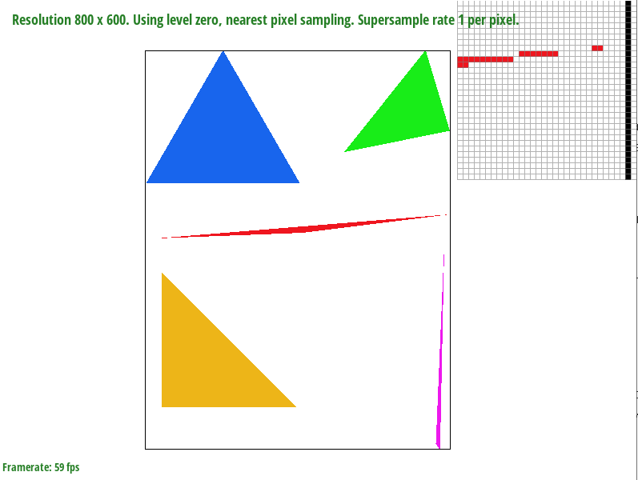 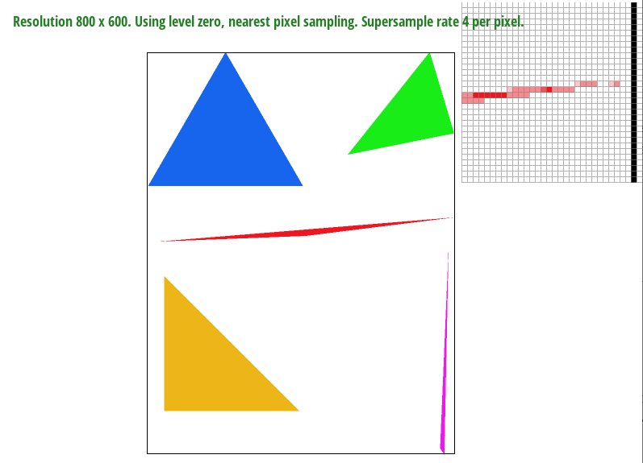 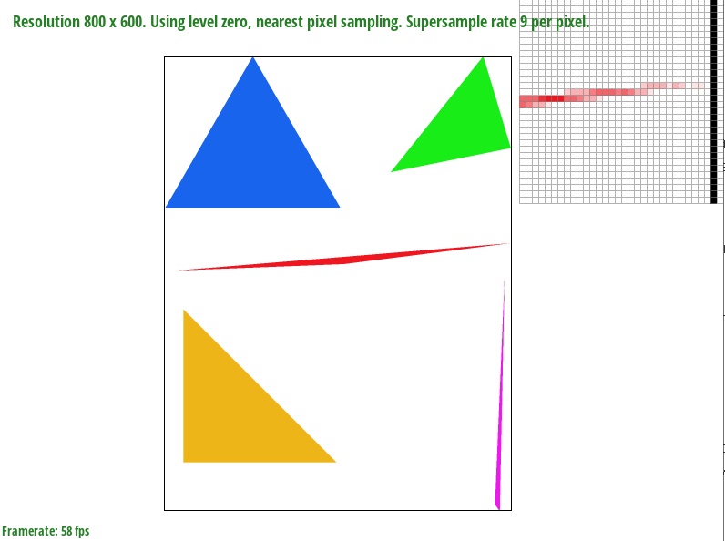
As one can tell, especially with the zoom, the aliasing on the sharp edge of the red triangle becomes much more faded as the supersampling rate goes up. This happens because of the aforementioned effect of multiple samples leading to more accurate recording of what sections of a pixel fall inside the drawn triangle. In the first image there are a few pixels that are completely uncolored, because their samples didn't fall under the triangle bounds. More color started to fill that gap as more samples that could fall under the bounds were introduced. Of course, some pixels that were colored more opaquely earlier also became more translucent as the sample rates increased, because some samples that were outside of the bounds denoted when pixels were not covered by the triangle as much as was previously calculated. This dual effect is the core of supersampling antialiasing in rasterization, that is useful in other areas.
I changed my cubeman to wave at the viewer with their left hand, with their right hand relaxed to their side.
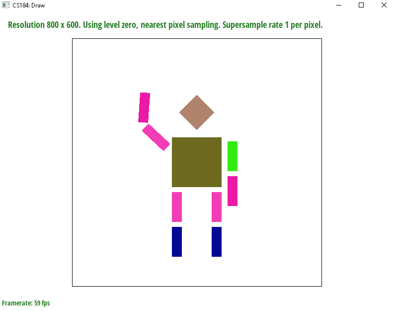
Asides from editing the hexidecimal color values, I had to edit some of the transform calls in the code. I mainly edited the right hand to resemble the calls to the left and right legs, only changing the translation of one of the components to be further up and to the right. The left arm involved adding more statements, as I edited some of the translational transforms, and added some rotation transforms underneath to pose the arm in a wave. This had to be placed underneath the translation statements in the svg file, so that they would be calculated before the translation. This makes it easier to pose the components, as they are not displaced more across some farther away origin.
I implemented this task using the barycentric coordinate equations on the slides, with much of the same code from the previous tasks regarding the rasterization. Barycentric coordinates work in this context by taking a given triangle, attributing each vertex to some arbitrary color value, and when rasterizing a point, that point is interpolated linearly with respect to each color value vertex to obtain a new color value that smoothly transitions to that point from each vertex. That is to say, the proportional distances from a single vertex to the sample are computed for each vertex using these linear interpolation techniques, and those proportional distances are multiplied to each vertex and added up to get the color value at the gradient where the sample resides.
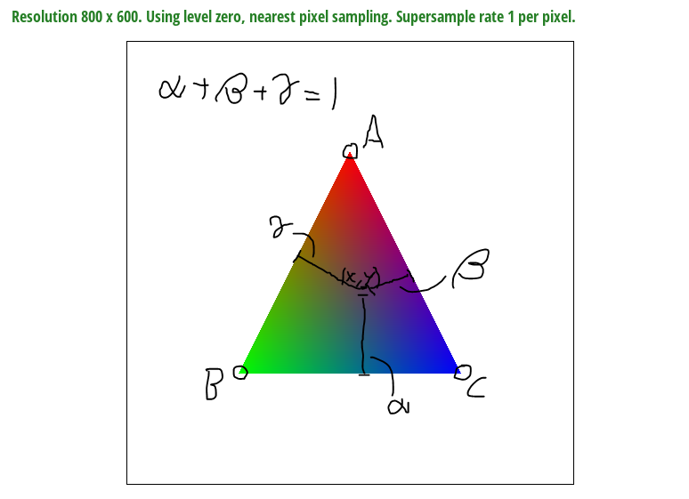
After these calculations are done in my method implementation, that pixel sample's color is recorded in the sample buffer.
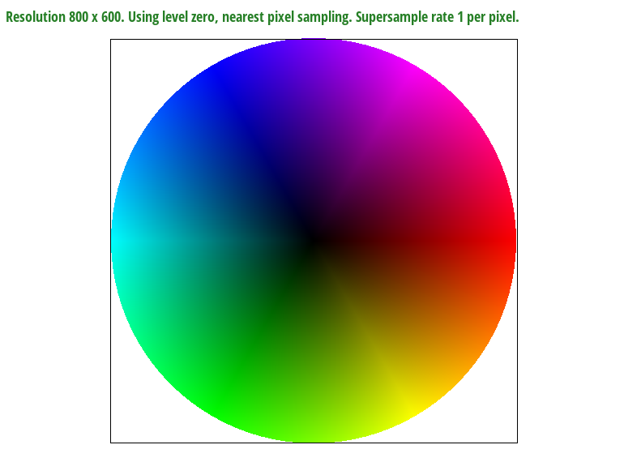
To understand pixel sampling, one must understand how uv mapping works. In the context of the rasterizer implementation here, the pixel coordinates that are sampled here are coordinates in the screen space, but the texture space is actually different from the screen space, so the screen coordinates need to take colors from the texture space at the correct positions to correctly map the entire texture onto the screen space. Where pixel sampling methods come in is in how we attribute the colors of a texel in the uv space to a pixel sample in the screen space, so it can be put in the framebuffer correctly. The nearest pixel sampling method simply rounds the uv coordinate to the nearest texel, and samples that color, while the bilinear pixel sampling methods estimates the color at that uv coordinate using the four nearest texels that surround the uv coordinate, and taking multiple linear interpolations to get the color gradient at where the uv coordinate is, similar to the barycentric coordinate calculations for triangles above, although not as complicated since here it is done with squares.
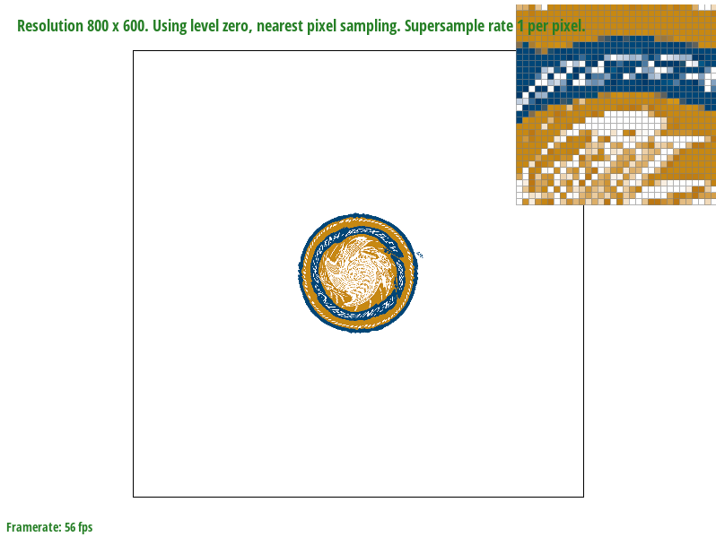 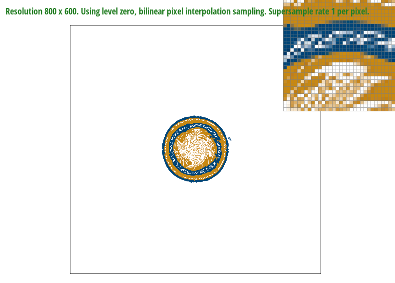 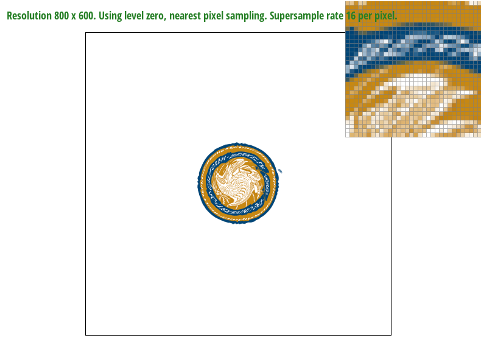 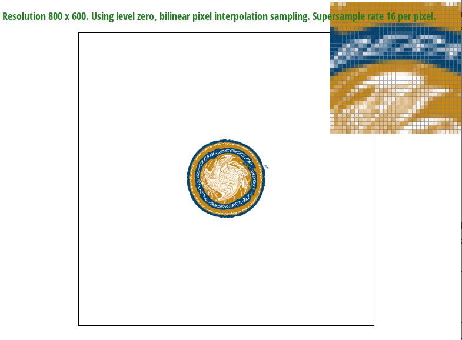
The relative differences can be seen the most in the lettering of the logo, as they are more blocky and aliased in the nearest pixel sampling rates, but much smoother and rounded in the bilinear examples. It is harder to tell between the supersampled 16 rate pictures as the supersampling already antialiases the picture. While the nearest pixel sampling is probably returning somewhat inaccurate results, because the image is still averaged over multiple pixel samples back in the rasterizer, those inaccuracies go away a little, making it harder to discern any usefulness of bilinear pixel sampling in the case of something supersampled at a high rate.
Large differences between the two methods typically arise when a given texture has strikingly different colors between each texel. This is because the nearest method will round to one of those colors, creating some mild aliasing effect in the process, while the bilinear method can find the approximate color that exists in between two or more texels, which leads to somewhat more accurate sampling.
As a side note, this task and task 6 gave me the most trouble when coding, because I ran into a "vector subscript out of range" error frequently when trying to debug. With task 5 specifically, I ran into the error often when calling the get_texels method, and trying to access the texels[] structure; the only thing I could find was that sometimes the uv coordinates would be outside of the range [0, 1], and while I tried casting variables in both, the calculations for barycentric uv coordinates in rasterizer.cpp, and the scaling operations in texture.cpp, I could never fully guarantee a range of [0, 1], so I added a hard fix of if statements in the sample_nearest and sample_bilinear functions to catch uv coordinates that were outside that range and taper them to either 0 or 1.
Level sampling is a kind of resampling that involves downsampling the resolution of an image wherever aliasing can be avoided. Usually this is done for objects or textures that are supposed to be in the distance, but it can also be done for when pixels that are being uv mapped to a texture happen to be farther away from each other in the texture space. The idea is that these mipmaps start at level 0, or the full resolution, and gradually lower in resolution with each rising miplevel, until there is no more resolution, and everything is one color. To achieve this, I implemented calculations in the rasterize_textured_triangle function to get the uv coordinates of a sample of a pixel, as well as the uv coordinates of a neighboring sample one pixel in the x direction, and the coordinates of a neighboring sample one pixel in the y direction. These are passed to the sample function in texture.cpp, which immediately calls get_level, to get the appropriate mipmap level. That function works based on the lsm parameter, where the nearest and linear values for mipmap level D are calculated with math from the slides, and the vectors for the change in aforementioned uv coordinates. Once the level is obtained, the same functions that were passed in task 5, are passed again, with consideration for psm. The only difference is, if lsm is linear, then the D is continuous, meaning that multiple texel color samples need to be returned, with the weighted sum between them as the objective to return to the first rasterizing function.
As another note, I was getting the same error as in task 5, about the subscript being out of range. This time it was related to the way I calculated D, which needed to be changed a few times. The change in particular was that the level D would, at times, be greater than the resolution could actually allow for, and when that would occur, I added a min() to cap the D at the highest level it could go to. There was also a minor error in lines 19-20 of texture.cpp, where the distances from continuous D to adjacent D's would both be zero if continuous D was an integer. If this happened, I would just set one of the distances equal to zero, as that made sense; it would just calculate the color now as though it were simply doing nearest level sampling.
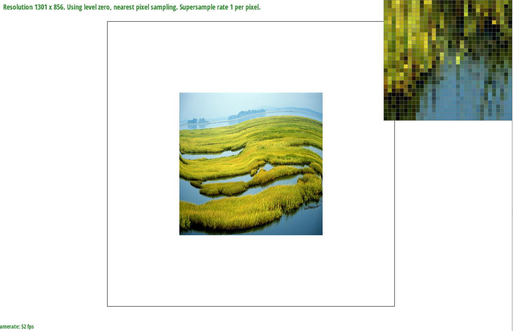 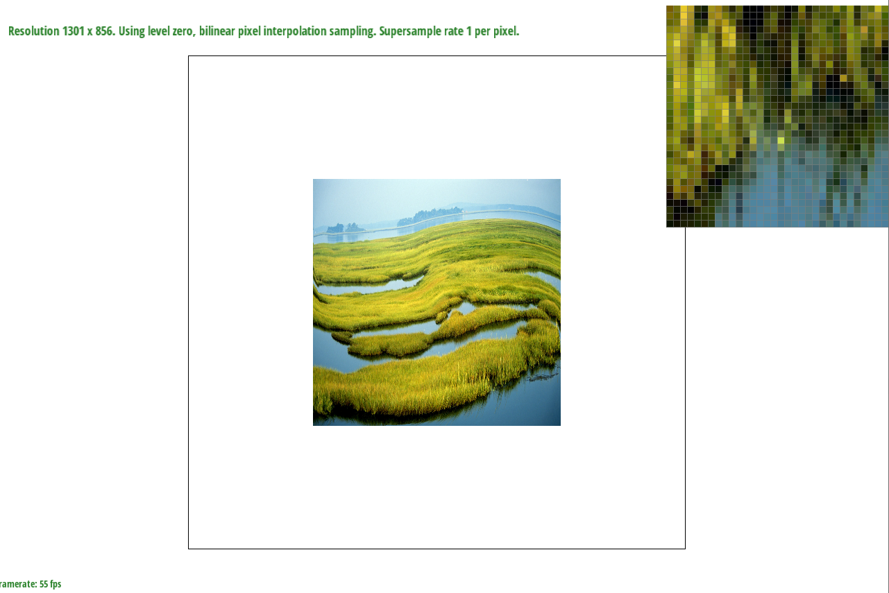 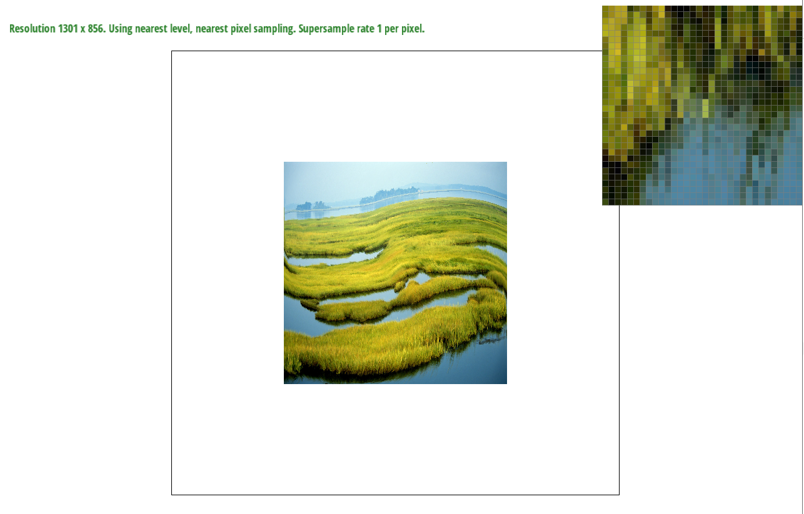 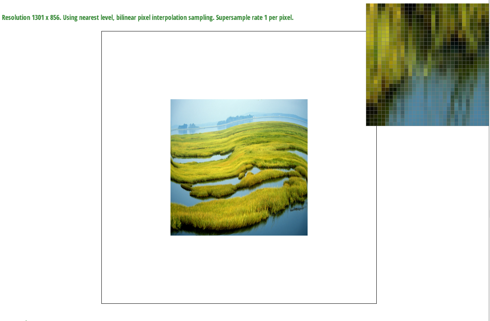 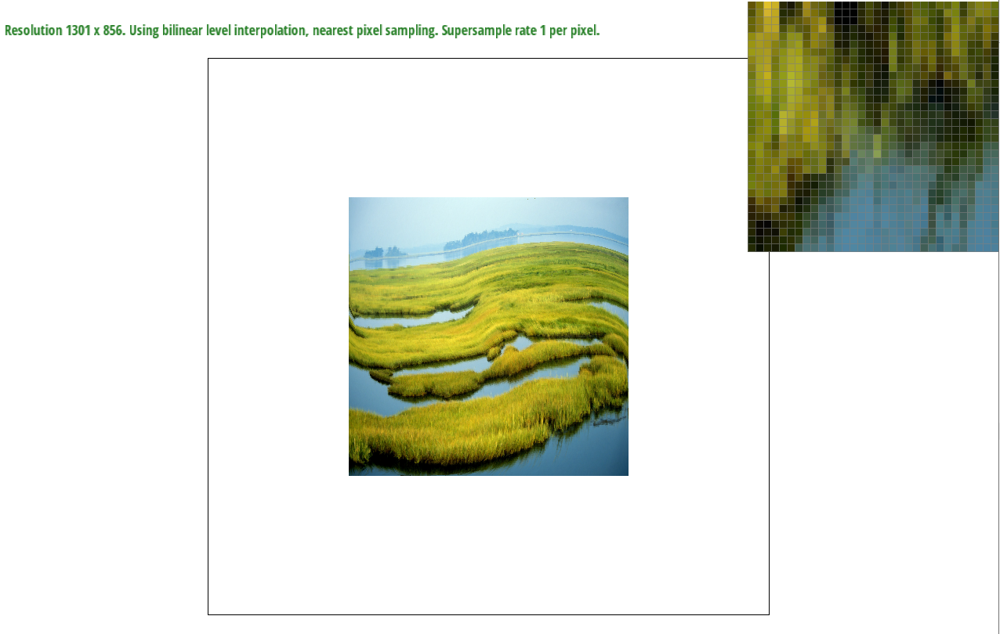
For the deliverable, I decided to use a png of some wetlands I found online, morphed to the uv map of test2.svg in texmap. The observable difference is that, psm on its own doesn't change image quality too drastically, but coupled with lsm, it can have a very good effect. In fact, lsm can still look aliased to some degree without psm, but antialiased and blurred with psm. This is a change observable in the zoom window as well, where the pixels blend together more as both psm and lsm are fine-tuned, especially with the last trilinear filtering option. The only tradeoff there is that the lsm methods are a bit slow, given how much memory they have to hold, and how the mipmap has to be resized constantly. This also affects memory usage consequently, making it less viable depending on what one would like to texture map. While the psm on its own does not have the best antialiasing power, it is much faster by comparison, and doesn't require additional memory allocation, so it can be seen as a more viable option, even if lsm methods can antialias better. That said my computer doesn't take much longer to compute lsm over psm, and it takes much longer just to compute supersampling, so lsm and psm might be more viable than that.
Link to Webpage: https://cal-cs184-student.github.io/sp22-project-webpages-CalArsen/
Side Note - The docs file includes the robot.svg I created, the Task4 svg I created for the explanation in Task 4, and the png svg I made for Task 6. All other images are contained directly in the proj1 folder.